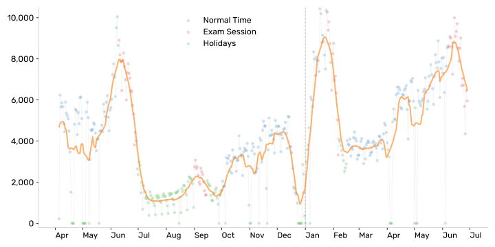
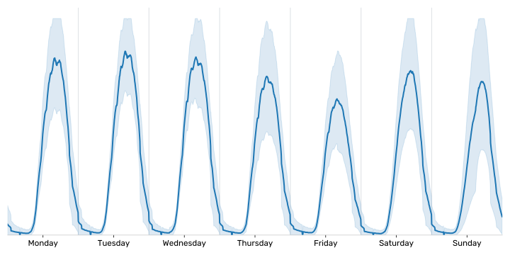
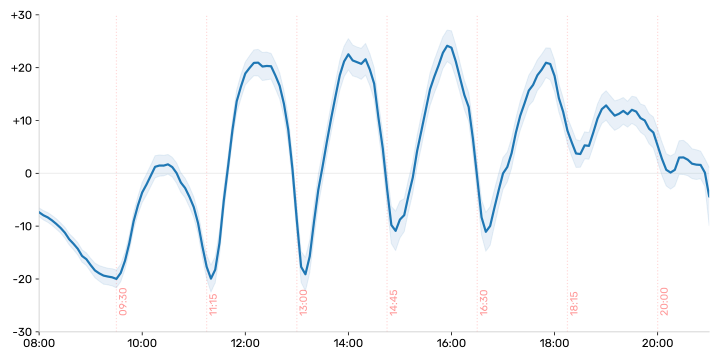
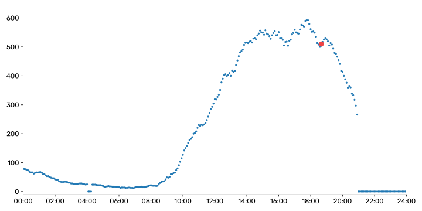

University of Warsaw library occupation
10 April 2026
University of Warsaw has a very beautiful library located in the down town. It is rather modern and has amazing garden on the roof. And most importantly for this post – it has an occupation counter publicly available on their website. Each time the student comes in or goes out they have to tap the library card and the system automatically count the number of students inside. The number is displayed on the website 1.
So for the last year or so I have collected the total number of students in the library with the resolution of 5 minutes. Here I present some of the most interesting findings.
Disclaimer: The data is sometimes missing as the scarping script was breaking from time to time, so the missing data was approximated using the Random Forest Method and the historic data available.
The Data
First, let's take a look at the data itself. In the plot below we present the daily student-hours (SH) of the library which is defined as a unit of work where 1SH is 1 student working for 1 hour. This gives us the collective information for how many students visited the library given day but also how long the library was operational.

We can clearly see the university season: May and June rise just before the exam session, quick drop in July, retake exams in September, winter holidays in December and the winter exam session in January, quick drop in February and a steady grow in the spring. Those global seasonal changes are to be expected.
What can be more surprising are the more local seasonal changes. Let's take a look at the weekly distribution of students, where plot the averaged normalized week and the standard deviation.

What is obvious by looking at the data is low Fridays occupancy. We can see clear trend where from Monday till Wednesday we do not see much deviation, then we see on Thursday and Friday the drop, but to my surprise we see on weekend the growth in number. It can highlight the fact that there could be two different populations in the library on weekdays and weekends, like students who only study and students who are having part time job. But to decide this we would nee more data.
If you take a closer look on the peaks on each day you can spot the small spikes on the on the weekdays line but not on the weekend. It is surprising as the average line should smooth all the randomness through the days so those peaks are a signal for some additional mechanism in the library occupancy number – nearby faculties and university classes.
University Classes
Lets take first a look at days during the normal period, days which are not holidays nether the exam session. We can smooth each day with a moving average of 3h and compared this smooth-out signal to the original one. We plot the difference between those two below:

We can see the gaps every 1.5h which is exactly the duration of the classes in the University of Warsaw. We can see both students who are leaving for the classes and around 10~15 minutes later we see the students coming back from the classes. So if you want to come during the weekdays and you want to find the place to sit then come during the breaks in university classes. But be on time, since the dips are really short!
Homicide in May 2025
The tragic event happened on May 7th 2025, where a student of UW murdered an administrative worker on the main campus. It was a tragic event, no one expected it. As the attack was close to the library of the UW (~10 minutes walk) the library was closed earlier that day and it was closed the next day. Let's take a look at that very day.

The incident took place at 6:40PM. The library was behaving as usual till 9PM where it was suddenly closed with more than 250 students inside. The library counter went offline at 9PM so we cannot track how fast people were leaving the building.
What is surprising to me is the fact that the library was functioning normally from the incident till 9PM and there is no sign that the students were leaving earlier. The curve above is the standard curve for a day. The next day after the tragedy was a grief day in the whole university and everything was closed including the library. After that one day break everything went back to normal.
On Friday after the incident library was already opened and one could see that students are filling up the library in the standard way. Other days did not stand out neither. The only change which was visible was the closure of the library for the night in May. It lowered the total number of Student-Hours in May.
Summarize
In short I wanted to show the cyclic behaviour of the university library. From the global trends of normal time, exam sessions and holiday, through the weekly oscillations and Friday's breaks to 1.5h cycle of the lectures of the nearby faculties. Even though hundreds of students pass thought the library every day, the occupancy is very predictable.